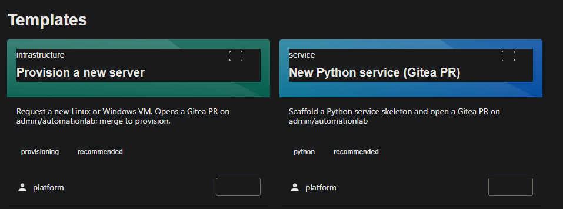
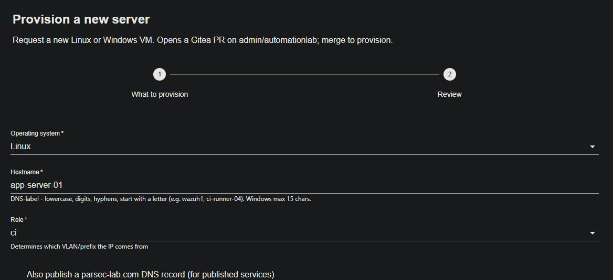
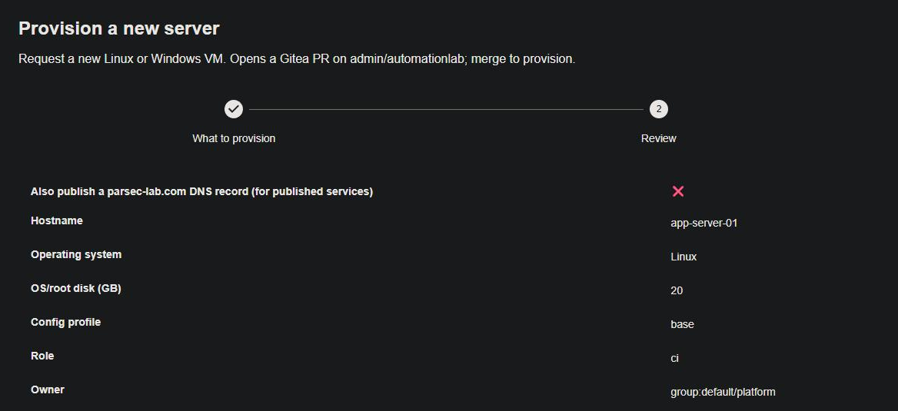
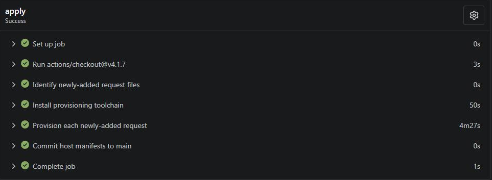
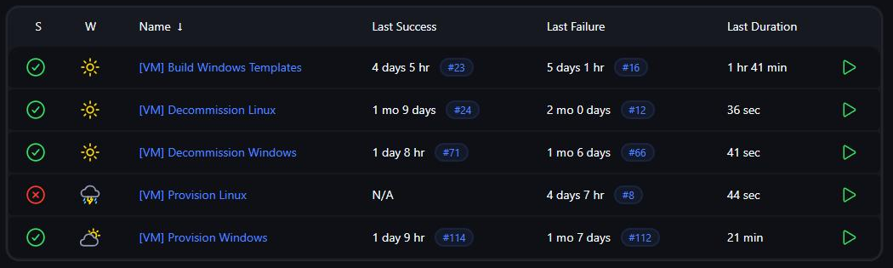
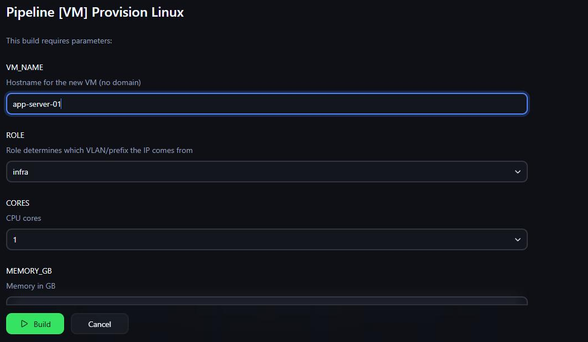
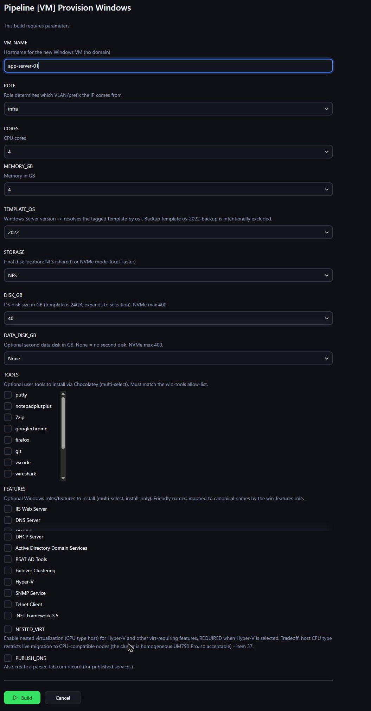

Automated server provisioning
A server is one fact recorded in five systems at once, and building it by hand lets any of them silently disagree. This pipeline builds all five together and refuses to proceed if a name is already taken anywhere. It now has two front doors: a form in a Backstage portal that turns the request into a pull request, and Jenkins for scheduled and operational work. Same scripts, same gates, two engines. The last portal-driven build went from merged request to a configured, monitored, DNS-registered VM in 5 minutes 21 seconds.
Through the portal
The original front door was a Jenkins parameter form. It works, and Jenkins still owns every scheduled job in the lab, but a parameter form has no review step and no paper trail a reader can follow. So the request itself became a file in git, and the front door became a Backstage portal running inside the lab. The form renders a small request file, opens a pull request with it, and stops. Nothing has been built yet. That is the point.

The form asks only for what the pipeline actually needs: operating system, a hostname, a role, an owner, and sizes. The role decides which network the address comes from, so the requester never types an address and never gets one wrong.


The pull request is the approval boundary, and it is not a rubber stamp. CI runs the same collision gate the pipeline uses (ask every system that could already know the name) plus a full infrastructure-state plan, on the request itself, before any human decides. A reviewer sees the exact machine the request would create. Merging is the approval. A workflow picks up the merged request and runs the same provisioning scripts Jenkins runs: allocate the address, pick a node by live free memory, apply, register monitoring, configure with the agent, register DNS, write the host manifest back to git.

The part I care about: this path never touches Jenkins, and it changed no pipeline logic. The request file, the collision gate, the plan, the apply, the registrations are all the same code the Jenkins door uses. One pipeline, two engines. If either door is down, the other still builds servers.
The Jenkins door is still there, and it is still how scheduled and operational work runs. The VM view carries the whole machine lifecycle: template factory, provision, decommission. Its provision form asks the same questions the portal form asks, because both render the same request for the same pipeline.


What it does
A server is a fact recorded in five places at once: the address in address management, the machine on the hypervisor, the host in monitoring, the resource in infrastructure state, and the entry in configuration inventory. Build one by hand and any of those can silently disagree, or worse, silently agree with a machine that already exists. The failure this pipeline is built against is the one everybody has seen: a new host quietly reconciles a live one because nothing checked every system that already knew the name.
- Validate input
- Reachability pre-flight - refuse a target whose network path is untested
- Name collision check - ask every system that could already know the name
- Allocate an address from address management
- Select a node by live free memory
- Plan, in this machine's own infrastructure-state workspace
- Operator approval - a 60-minute gate on the Jenkins door, the merge itself on the portal door
- Apply - the roll-forward boundary
- Register monitoring, minting a unique per-host key into the secrets manager
- Configure with the agent (already trusted)
- Register DNS
- Commit the host manifest
The Windows path
Windows runs the same backbone and diverges where it must: it mints a per-host local-admin password into the secrets manager, resolves a template by tag rather than booting a cloud image, and waits for remote management to be stably up (six consecutive good checks) because first-boot init flaps the port and a single successful probe is a lie. Same spine, different limbs, one place where the difference lives instead of a second pipeline to keep in sync.
The Windows form is where the extra surface shows. On top of the shared questions it offers the Windows Server version (resolved to a template by tag, never a hardcoded id), shared or node-local disk, an optional second data disk, a tool list from a Chocolatey allow-list, a roles-and-features list mapped to canonical names, nested virtualization with its live-migration tradeoff spelled out in the help text, and an opt-in published DNS record. Every option carries its constraint next to it, so the form teaches the pipeline's rules while you fill it in.

What broke, three times, and what I did about it
One: the gate could not see. The collision check asked the address manager for devices and virtual machines. But a host provisioned by this pipeline is recorded as an address with a DNS name, not as a device object. So the query came back empty, the API was perfectly healthy, and the gate said "no collision" about a host that was already alive. Fixed by also querying the address records, and by adding a deterministic scan of the configuration inventory: reading a file beats guessing from a naming convention.
Two: the gate could see, and nobody was listening. This one is my favourite. The detector
correctly found the collision, printed it, and exited non-zero. The pipeline proceeded anyway. The
stage ran the checker piped into tee so the report could be saved, and a shell
pipeline exits with the status of its last command. That was tee, which always
succeeds. The gate had been reading tee's exit code the entire time it existed. Fixed by
redirecting instead of piping, and by adding a fail-safe so an unset or unparseable exit code can
never read as clean. The same bug was sitting in the reachability pre-flight; it went in the same
pass.
script {
def rc = (env.COLLISION_RC ?: '').trim()
if (!rc.isInteger()) {
// Fail-safe: an unset/unparseable exit code must NEVER read as clean. Gate-or-fail.
error("Name collision check produced no usable exit code (COLLISION_RC='${rc}'); refusing to proceed ungated.")
}
if (rc != '0') {
// 2 = confirmed collision; 3 = unverifiable (fail-loud). Both gate; wording differs.
def collision = rc == '2'The fix for bug two, and the fail-safe it taught me to add.
Three: rejecting the plan leaked the address. Reject the approval and the reserved address stayed reserved. The release ran in the pipeline's failure handler, but a rejected approval does not fail a build, it aborts it. Fixed by moving the release to the handler that covers failed, aborted, and unstable alike, still guarded so that a machine which already exists keeps its address rather than having it yanked out from under it.
The rule worth stealing
Underneath all three is one rule, and it is the part worth stealing: an unreachable system is never "clean". If a system that could hold a conflicting name cannot be reached, that is not a pass, it is an unknown, and an unknown still stops the build.
def evaluate(hits):
"""Pure verdict over the gathered hits. 'collision' > 'error' > 'clean'."""
if any(h["present"] is True for h in hits):
return "collision"
if any(h["present"] is None for h in hits):
return "error"
return "clean"
EXIT = {"clean": 0, "collision": 2, "error": 3}Present means collision. Unknown means error. Only proven-absent is clean.